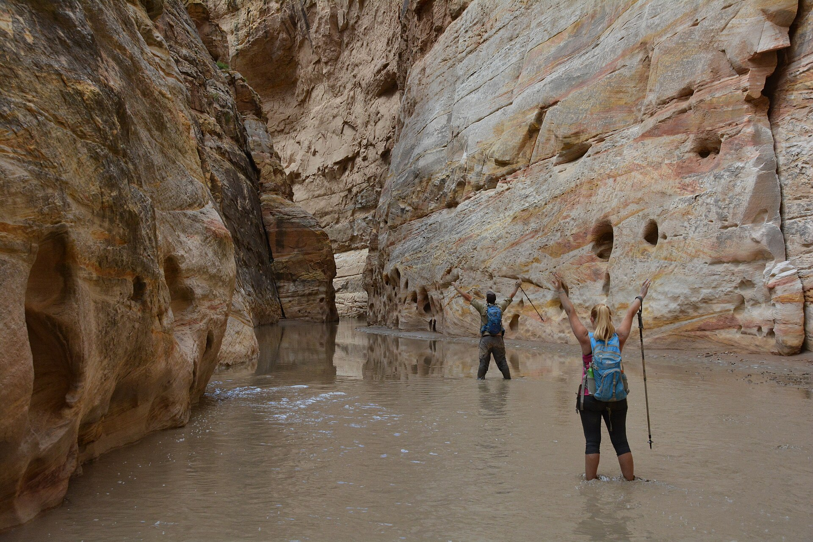

Committed terrain, committed problems
- The eight-foot jump lands wrong. An ankle folds on a hidden ledge two rappels below the rim. She can’t weight it, the exit is a mile of narrows downstream, and "go back" stopped being an option an hour ago.
- Clear sky, brown water. The storm is twenty miles away over a plateau you can’t see. Reading the drainage before you drop in is scene safety at canyon scale — runoff doesn’t care where the rain fell.
- The exit gully at 104. The technical section went fine. The sandstone exit in full sun is where your partner stops sweating and starts talking nonsense — and the cooling happens there, not at the car.
Read these before you drop in
Ordered for the way canyons stack their hazards:
- Provider Safety — flash-flood judgment is scene safety with a bigger clock
- Musculoskeletal Injuries — ankles and lower legs pay for every jump and downclimb
- Cold Injuries — the swims run cold in July — wetsuits delay it, they don’t cancel it
- Heat Illness — canyon country cooks the approach and the exit
- Evacuation — help has to reach a slot it can’t see into — plan for that
Then pressure-test it
Interactive scenarios — one decision at a time, tempting mistakes included, debrief at the end:
- Hero Complex — the scene that wants to make it two patients
- Wiggle, Feel, Warm — splint doctrine and the CSM check your ankle patient needs
- Cool First — heat stroke where the shade isn’t
The certification question, honestly. “Wilderness First Aid” isn’t a regulated credential. No government body defines what a WFA card means — it means whatever the company that printed it says it means. What counts in front of a patient is whether you can do the work. This course teaches the work, free, and issues a record of completion — not a certificate, and we won’t pretend otherwise. Rope rescue, partner assists, and swiftwater skills live in canyoneering courses — the ACA’s rescue curriculum and a swiftwater class are worth every dollar. This is the patient side of that education: free, before, and in between. If nobody requires you to hold a card, what you need are the skills, not the laminate.
What this is
Fifteen lessons, a 40-question knowledge check, sixteen practice scenarios, a printable field reference card, and a kit checklist. Free, no account, nothing recorded about you, source on GitHub. It teaches decision-making, not hands-on skill — practice the hands-on parts on a real, padded, complaining friend.
Same trails, different speeds: disc golfers on wooded & remote courses · backpackers & thru-hikers · mountain bikers